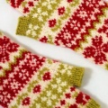
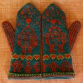
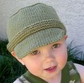
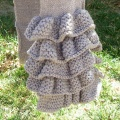
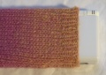
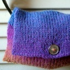
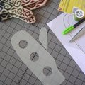
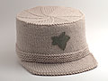
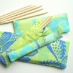
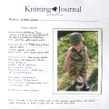

|
||
Premium Patterns Wintry Mix Mitts Love Bytes HawkeyeFree Patterns Kiddie Cadet Summerlin Ruffled Scarf Seamless DS Sock Simply Seamless Pouch Myriads of MushroomsExtras DIY Mitten Blocker Felt Patch Tutorial Yarn Dyeing Tutorial Needle Pouches Knitting Journal |
Patterns and ExtrasYou've come to the right place for great knitting patterns and lots of other goodies! We hope we have provided some stylish, useful, and fun to knit items, and hope that you will enjoy them as much as we have enjoyed the patterns from other knit-bloggers. If you do make one of our patterns we'd love to see your version and hear feedback! We've also added great extras that you're sure to love, check back often because you'll never know what we'll come up with next! Premium Patterns Wintry Mix Mitts Cute sampler style mitts with a mix of fun wintry motifs. This is a great pattern for those of you looking to really delve into stranded knitting!
 Love Bytes These mittens will keep you warm and put a smile on your face. Nothings sweeter than robot love!
Hawkeye This unisex cadet style hat is equally fitting whether you’re shopping or skateboarding.
Free Patterns Kiddie Cadet An adorable and trendy hat that is perfect for that special little someone. It doesn't get any cuter than this!
Summerlin Make the perfect summer garment for your little princess. Pattern uses both sewing and knitting and includes instructions for two dress styles and a top.
 Marc Jacobs Inspired Ruffle Scarf A designer inspired scarf with unique ruffle detailing.
 Seamless Nintendo DS Lite Sock Protect your Nintendo DS from scratches with this easy to make sock.
 Simply Seamless Pouch A take anywhere pouch that can be made several different ways and is totally seamless... no DPNs required!
 Myriads of Mushrooms A variety of small mushrooms for you to knit and felt.
Extras DIY Mitten Blocker Looking for a way to make your mittens fit perfectly every time? Try this easy to make mitten blocker!
 Felt Patch Tutorial Learn how to attach felt patches to your knitted items.
 Yarn Dyeing Tutorial Learn how to dye yarn using Easter egg dyeing kits! It's a fun, easy, and nontoxic way to create beautifully colored yarn!
 Double Pointed Needle Pouches This super easy tutorial shows you how to create pouches to keep your double pointed needle sets together!
 Knitting Journal Create the knitting journal you've always wanted with our free templates! These stylish pages are the perfect way to organize and document all things knitting related.
|
   Recent ReviewsRecent Posts
 Our Favorites
|
| © 2007 KathrynIvy.com | ||